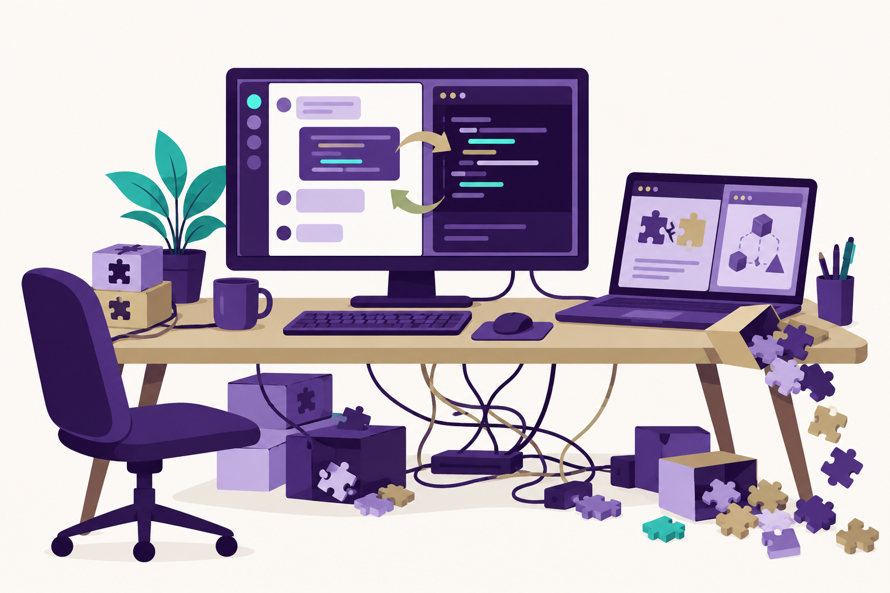

<link rel="stylesheet" href="../shared/slide-base.css">
<section data-slide="14-env-problem" aria-label="Agent environment: the problem" class="slide" data-presenter="don">
  <div class="accent-bar-left"></div>
  <div class="content">
    <ol class="progress" aria-label="Where we are in the session"><li class="done">Orientation</li><li class="active">Agent environment</li><li class="">Instruction entry point</li><li class="">Project memory</li><li class="">Agent skills</li><li class="">Skill evals</li></ol>
    <p class="eyebrow">Section 1 of 5 · Agent environment · the problem</p>
    <div class="grid">
      <div class="text">
        <h1>Setup can derail a simple task</h1>
        <dl class="pairs">
          <dt>For humans</dt><dd>You follow the setup steps, hit a dependency error, and spend the afternoon fixing your environment.</dd>
          <dt>For agents</dt><dd>Sonnet used <code>pip install</code> even though the repo had pixi. It kept trying different approaches instead of using the existing setup.</dd>
        </dl>
        
        <div class="prompt-card">
      <p class="prompt-label">Live demo prompt</p>
      <pre class="prompt">Add a hello-world module with a test, then run the test suite.</pre>
    </div>
      </div>
      <figure class="figure"></figure>
    </div>
  </div>
  <style>
    
    section[data-slide="14-env-problem"] { background: linear-gradient(90deg, rgba(75,46,131,0.06), transparent 34%), var(--surface-primary); padding: var(--space-16) var(--space-20); }
    section[data-slide="14-env-problem"] .content { position: relative; z-index: var(--z-raised); display: flex; flex-direction: column; width: 100%; height: 100%; }
    section[data-slide="14-env-problem"] h1 {
      font-family: var(--font-display); font-size: var(--slide-title); font-weight: var(--font-extrabold);
      letter-spacing: var(--tracking-tight); line-height: var(--leading-tight); color: var(--text-brand);
      margin: var(--space-2) 0 var(--space-6);
    }
    section[data-slide="14-env-problem"] p, section[data-slide="14-env-problem"] li { font-size: var(--slide-body); line-height: var(--leading-relaxed); color: var(--text-primary); }
    section[data-slide="14-env-problem"] .lead { font-size: var(--slide-lead); }
    section[data-slide="14-env-problem"] .muted { color: var(--text-secondary); }
    section[data-slide="14-env-problem"] .source { margin-top: auto; padding-top: var(--space-4); }
    
    
    section[data-slide="14-env-problem"] .progress { list-style: none; display: flex; gap: var(--space-6); margin: 0 0 var(--space-6); padding: 0; }
    section[data-slide="14-env-problem"] .progress li {
      font-family: var(--font-compressed); font-size: var(--slide-label); font-weight: var(--font-semibold);
      letter-spacing: var(--tracking-widest); text-transform: uppercase; color: var(--text-secondary);
      padding-bottom: var(--space-2); border-bottom: 3px solid var(--color-neutral-200);
    }
    section[data-slide="14-env-problem"] .progress li.done { color: var(--text-brand); border-color: var(--color-gold-500); }
    section[data-slide="14-env-problem"] .progress li.active { color: var(--text-brand); border-color: var(--color-teal-500); }
    section[data-slide="14-env-problem"].dark .progress li { color: var(--color-neutral-400); border-color: rgba(255,255,255,0.15); }
    section[data-slide="14-env-problem"].dark .progress li.done { color: var(--color-gold-200); border-color: var(--color-gold-500); }
    section[data-slide="14-env-problem"].dark .progress li.active { color: var(--color-white); border-color: var(--color-teal-500); }
    
    
    section[data-slide="14-env-problem"] .prompt-card {
      background: var(--surface-terminal); border: 1px solid rgba(42,210,201,0.25); border-radius: var(--radius-md);
      padding: var(--space-5) var(--space-6); box-shadow: var(--shadow-glow-teal-sm); margin-top: auto;
    }
    section[data-slide="14-env-problem"] .prompt-label {
      font-family: var(--font-compressed); font-size: var(--slide-label); font-weight: var(--font-bold);
      letter-spacing: var(--tracking-widest); text-transform: uppercase; color: var(--color-gold-500); margin-bottom: var(--space-2);
    }
    section[data-slide="14-env-problem"] .prompt {
      font-family: var(--font-mono); font-size: var(--slide-code); line-height: var(--leading-relaxed);
      color: var(--color-teal-500); white-space: pre-wrap; margin: 0;
    }
    section[data-slide="14-env-problem"] .prompt::before { content: "> "; color: var(--color-gold-500); opacity: 0.7; }
    
    section[data-slide="14-env-problem"] .grid { flex: 1; display: grid; grid-template-columns: 1.15fr 1fr; gap: var(--space-12); align-items: stretch; min-height: 0; }
    section[data-slide="14-env-problem"] .text { display: flex; flex-direction: column; min-height: 0; }
    section[data-slide="14-env-problem"] .pairs { margin: 0 0 var(--space-6); }
    section[data-slide="14-env-problem"] .pairs dt { font-family: var(--font-compressed); font-size: var(--slide-label); font-weight: var(--font-bold); letter-spacing: var(--tracking-widest); text-transform: uppercase; color: var(--color-gold-700); margin-top: var(--space-3); }
    section[data-slide="14-env-problem"] .pairs dd { font-size: var(--slide-body); line-height: var(--leading-relaxed); color: var(--text-primary); margin: var(--space-1) 0 0; }
    section[data-slide="14-env-problem"] .figure { margin: 0; display: flex; align-items: center; justify-content: center; min-height: 0; }
    section[data-slide="14-env-problem"] .figure img { max-width: 100%; max-height: 100%; object-fit: contain; border-radius: var(--radius-lg); box-shadow: var(--shadow-md); }
  </style>
</section>
